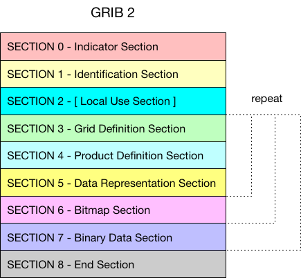
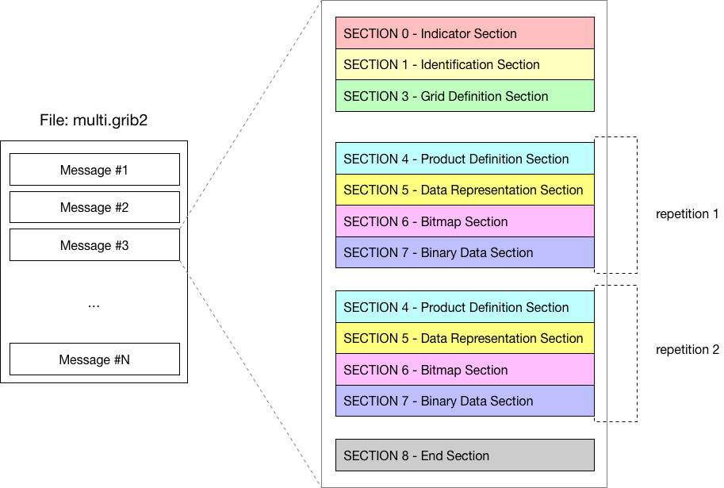

GRIB 2 的消息中第2段到第7段都可以重复，见下图。
译者注：NWPC 的 GRIB 2 数据尚未使用该功能，下面示例只是教程中的文字，尚未实际验证。

一个示例文件如下图所示：

考虑 数值预报模式预报的 12 小时和 24小时的 500 hPa 高度场。
Section 0: Indicator Section
Section 1: Identification Section
Section 2: Local Use Section (optional)
Section 3: Grid Definition Section
Section 4: Product Definition Section (hour = 12) | repetition 1
Section 5: Data Representation Section |
Section 6: Bit-Map Section |
Section 7: Data Section |
Section 4: Product Definition Section (hour = 24) | repetition 2
Section 5: Data Representation Section |
Section 6: Bit-Map Section |
Section 7: Data Section |
Section 8: End Section
注意：网格定义段（Grid Definition Section）未重复，对所有的预报时效都有效。
创建一个多要素场的 GRIB 2 文件。
#include <iostream>
#include <eccodes.h>
using namespace std;
int main(int argc, char** argv)
{
if(argc < 2)
{
cout<<"Usage: "<<argv[0]<<" grib_file_path";
return 1;
}
const char* file_path = argv[1];
const char* sample_filename = "regular_ll_pl_grib2";
int err = 0;
codes_handle *h = codes_grib_handle_new_from_samples(nullptr, sample_filename);
if(h == nullptr)
{
cout<<"ERROR: unable to create handle from file "<<file_path<<endl;
return 1;
}
size_t value_size;
codes_get_size(h, "values", &value_size);
auto values = new double[value_size];
double v = 0;
for(auto i=0; i<value_size; i++)
{
values[i] = v;
v++;
}
// codes_set_long(h, "bitsPerValue", 16);
codes_set_double_array(h, "values", values, value_size);
codes_multi_handle* multi_handle = codes_grib_multi_handle_new(nullptr);
const int start_section = 4;
for (int step = 12; step <= 120; step += 12)
{
codes_set_long(h, "step", step);
codes_grib_multi_handle_append(h, start_section, multi_handle);
}
FILE* output_file=fopen(file_path, "wb");
if(!output_file)
{
cerr<<"ERROR: unable to open output file " << file_path <<endl;
exit(1);
}
codes_grib_multi_handle_write(multi_handle, output_file);
fclose(output_file);
delete [] values;
codes_handle_delete(h);
codes_grib_multi_handle_delete(multi_handle);
return 0;
}
使用 grib_ls 查看生成的文件，ecCodes 将多变量消息处理成多个单变量消息。
$ grib_ls multi.grib2
multi.grib2
edition centre date dataType gridType stepRange typeOfLevel level shortName packingType
2 ecmf 20070323 af regular_ll 12 isobaricInhPa 850 t grid_simple
2 ecmf 20070323 af regular_ll 24 isobaricInhPa 850 t grid_simple
2 ecmf 20070323 af regular_ll 36 isobaricInhPa 850 t grid_simple
2 ecmf 20070323 af regular_ll 48 isobaricInhPa 850 t grid_simple
2 ecmf 20070323 af regular_ll 60 isobaricInhPa 850 t grid_simple
2 ecmf 20070323 af regular_ll 72 isobaricInhPa 850 t grid_simple
2 ecmf 20070323 af regular_ll 84 isobaricInhPa 850 t grid_simple
2 ecmf 20070323 af regular_ll 96 isobaricInhPa 850 t grid_simple
2 ecmf 20070323 af regular_ll 108 isobaricInhPa 850 t grid_simple
2 ecmf 20070323 af regular_ll 120 isobaricInhPa 850 t grid_simple
10 of 10 messages in multi.grib2
10 of 10 total messages in 1 files